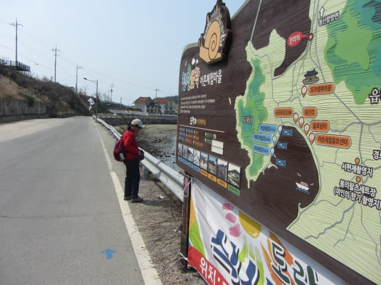

從青山小學循馬路向下走, 然後轉左沿沃爾瑪超級市場對面的古街小巷一直走, 穿出小巷, 迎面便是我們熟悉的青山島港, 這裡已經走過四次了, 那會不熟悉。接著沿青山島港旁的1號慢行路走, 拐過海灣, 穿過田野便是我們下榻的「청산빌리지펜션」民宿, 快來到青山島行程尾聲了。

沿青山島港旁走, 已經看見遠處山下的民宿, 所以在日間, 絕對不會迷路的。
現在明顯是潮退時間。
有兩隻白鷺在淺水覓食。
海女也在泥濘中撿拾海草和貝類的海產。
沿途的民宿。
道樂里 (도락리)入口
又來到道樂里入口的分叉路口, 我們昨天便是在這裡轉左進入道樂里村莊, 穿過東口井路往道樂里油菜花田的。
沿東口井路也可以返回民宿的, 但昨天已走過, 不想重複, 也想在離開青山島前多看一些, 便循青山島港旁繼續向前走。
上坡上的漂亮房子應該也是民宿吧!
海灣中嬉戲的鴨子。
繼續沿青山島港旁走。
哈哈~~~~ 我們的民宿就在遼闊田野的另一邊!
原本沿馬路一直走便是民宿, 但當看見田間中阡陌交通, 應該可以通往民宿那邊吧, 頑皮之心油然而生, 便打算沿田間小路走。
哈哈~~ 前面原來是一條灌水道, 此路不通, 便轉右走。
這時好像聽到有人在呼喊, 不知是否在罵我們, 便匆匆往前走, 在前面的小路轉左。
哈哈~~ 這條小路是可以通往馬路的! 民宿就在前面不遠處, 果然是一條捷徑。
就這樣返回民宿, 青山島的行程來到尾聲了!